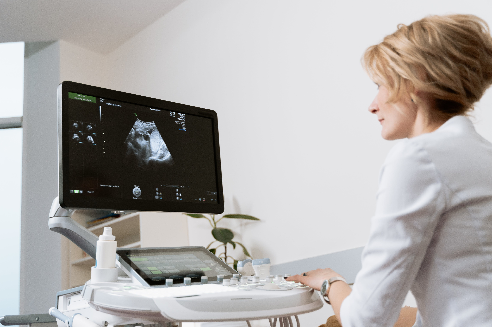
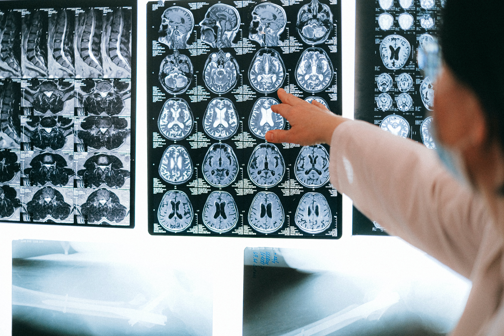

Nuestros cursos están cuidadosamente estructurados para proporcionar
conocimientos prácticos y habilidades técnicas esenciales, permitiendo
a los participantes aprovechar al máximo nuestras innovadoras soluciones médicas.
Entrenamiento Especializado en Equipos Médicos Cardiológicos
Este programa te guiará a través de los conceptos esenciales de electrocardiogramas, tecnologías de imagen cardíaca y
técnicas de intervención avanzadas. Aprende a interpretar resultados, utiliza equipos de diagnóstico de última
generación y perfecciona tus habilidades prácticas.
Duración: 2 semanas Del 08/01/2024 al 22/01/2024
Curso Avanzado en Imagenología Diagnóstica
Desde la interpretación de imágenes radiológicas hasta el manejo
experto de equipos de resonancia magnética y tomografía, este curso te sumergirá en el fascinante mundo del diagnóstico por imágenes.
Aprende a optimizar la calidad de las imágenes, interpretar hallazgos clínicos y dominar las últimas tecnologías en el campo.
Duración: 2 semanas Del 01/02/2024 al 15/02/2024
Innovación Tecnológica en Odontología Moderna
Sumérgete en las últimas tecnologías que están redefiniendo la odontología en nuestro curso especializado.
Aprende a implementar escáneres intraorales, sistemas CAD/CAM, y técnicas avanzadas de imágenes 3D.
Explorarás cómo las innovaciones tecnológicas mejoran diagnósticos, tratamientos y la experiencia del paciente.
Duración: 2 semanas Del 15/01/2024 al 29/01/2024
Eventos
Invitamos a nuestros clientes a explorar y experimentar lo último en tecnología médica con nuestros eventos gratuitos.
Contáctenos para conocer más.
Lanzamiento nuevo ecógrafo EPIQ Elite

Presentación del nuevo equipo de ecografía EPIQ Elite de la marca Philips.
Fecha del evento: 15/12/2023, 11:00 hs.
1
Evento de fin de año

Resumen de nuestros logros durante el 2023 y objetivos para el nuevo año.
Fecha del evento: 27/12/2023, 14:00 hs.
1
Sobre nosotros
ProMed es una empresa de equipamiento médico con más de 15 años en el mercado. Desde nuestros inicios, hemos proporcionado a profesionales de la salud, hospitales y clínicas el acceso a equipamiento médico de la más alta calidad y tecnología.
Nuestra misión es brindar soluciones efectivas a las necesidades de equipamiento médico de nuestros clientes. Trabajamos con las principales marcas y fabricantes a nivel nacional e internacional para garantizar que nuestros productos cumplan con los estándares más exigentes en términos de calidad y seguridad.
En ProMed, no solo nos esforzamos por proporcionar los mejores productos, sino también por brindar un servicio al cliente excepcional. Nuestro equipo de expertos está listo para ayudarte en la selección de equipos, asesorarte en la adquisición y brindarte soporte técnico cuando lo necesites.
Contacto
Estamos aquí para responder tus preguntas y ayudarte en lo que necesites. No dudes en ponerte en contacto con nosotros.